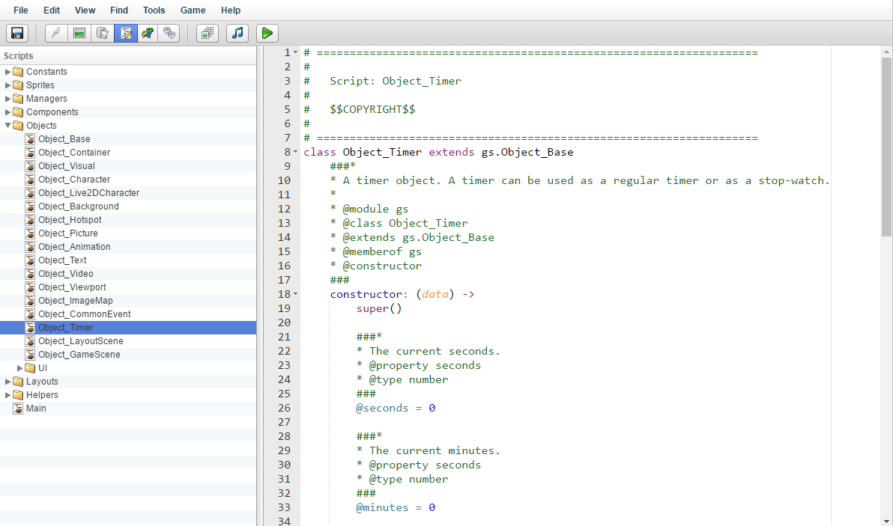

脚本
左侧是你游戏的所有脚本。你可以使用文件夹以任何你想要的方式组织你的脚本。 每个文件夹在内部都像一个脚本，甚至可以包含脚本代码本身。 所使用的游戏脚本语言是 CoffeeScript，它会被编译成 JavaScript，有关更多信息，请参阅www.coffeescript.org

。如果你不喜欢使用 CoffeeScript，你也可以创建 JavaScript 文件。
每当你保存项目时，所有编辑过的脚本都会被编译成 JavaScript，并且你会收到关于语法错误的通知。 如果有语法错误，只需修复它，然后再次保存你的项目。脚本/代码编辑器右侧是你当前选择的脚本的内容的 Code Editor。 Visual Novel Maker 使用 ACE Code Editor，有关 ACE 本身的更多信息，请参阅
www.ace.c9.io
。你可以使用 CTRL+,(逗号) 或 CMD+,(逗号) 打开 ACE 设置，你可以在其中更改字体大小等内容。
HTML游戏脚本 API 参考HTML